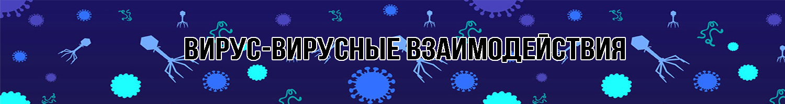

Непрямая трансактивация гетерологичных вирусных генов
Измененная восприимчивость хозяина из-за нарушения физических барьеров
Измененная восприимчивость хозяина из-за измененной экспрессии рецептора
Гетерологичная активация пролекарств
Модификация антивирусного состояния, индуцированного интерфероном
Измененная активация иммунных клеток
ВВВ индуцированный аутоиммунитет
О вирусе/вирусах: Вирус Эпштейна — Барр (ВЭБ), или вирус Эпстайна — Барр, или вирус герпеса человека 4 типа, или герпесвирус человека тип 4 (ГВЧ-4, англ. Human gammaherpesvirus 4, ранее Human herpesvirus 4) — вид вирусов из подсемейства гаммагерпесвирусов семейства герпесвирусов. Геном вируса Эпштейна — Барр представлен двуцепочечной ДНК, вирус в своем развитии не имеет РНК-стадии.
Описание взаимодействия: Вирус Эпштейна-Барра (ВЭБ), член семейства гамма-герпесвирусов, представляет собой ДНК-вирус с длинным двухцепочечным ДНК-геномом, который демонстрирует высокую степень вариабельности между штаммами. Эта вариация принимает форму отдельных оснований, полиморфизма сайтов рестрикции, вставок и делеций. Было обнаружено, что некоторые варианты EBV возникли в результате рекомбинации ДНК.
Источник: https://www.ncbi.nlm.nih.gov/pmc/articles/PMC7150154/